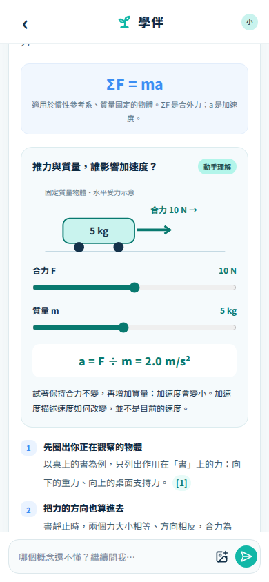
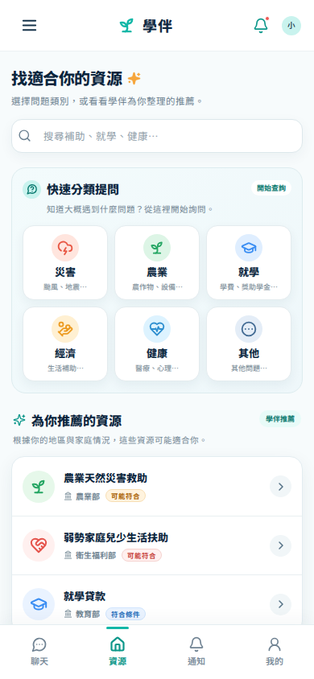
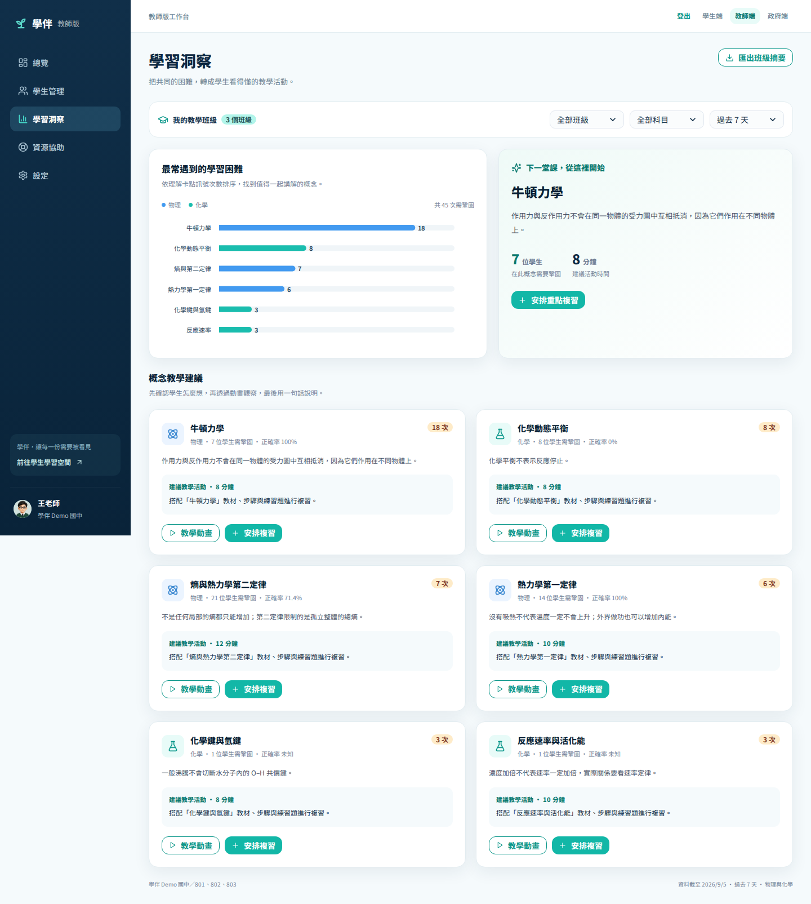
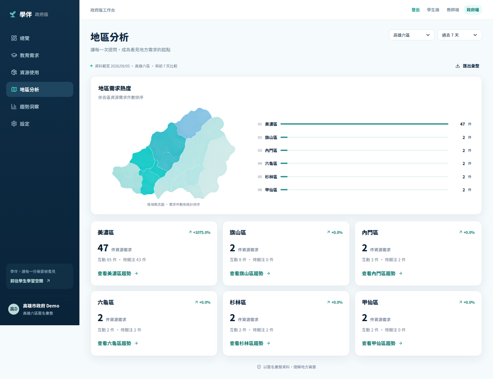

問
01 LEARN先問懂
分步回答、教材依據與互動動畫。
學生從偏鄉學生出發，把學習、資源與支持串成一條不掉接的路。
 我終於看懂了
下一步可以怎麼做？
需要被看見，也需要被保護
我終於看懂了
下一步可以怎麼做？
需要被看見，也需要被保護
學生先得到即時幫助，再讓最小必要訊號抵達下一個能行動的人。
分步回答、教材依據與互動動畫。
學生從需求與條件，走到可能方案。
學生／家庭交代原因、期限與立即下一步。
學生把學習卡點變成下一堂課安排。
教師用匿名聚合辨識地區需求趨勢。
政府學生從六個理化主題開始，說出卡點；回答不只給結論，也讓他親手改變條件、觀察結果。


學伴先釐清需求類別與關鍵條件，再排序可能資源，清楚列出準備資料、聯絡窗口與後續行動。


先確認申請期限，再準備身分與家庭情況證明。
提醒不只推播一個標題，而是交代匹配原因、截止時間與能立即前往的操作入口。

所在地有新的農業天然災害救助公告。
查看窗口與應備資料，直接進入下一步。
取得授權後，教師看到概念卡點、學生關注優先序與可執行的複習建議。

政府端只接收匿名聚合後的地區趨勢，用來辨識互動量、資源需求與主題變化。

從課業卡點走到互動驗證；從家庭需求走到可執行的資源下一步。
把經授權的學習訊號，轉成概念優先序與下一堂課的複習安排。
保護學生身分與原始對話，同時讓資源配置更貼近真實地區趨勢。
按「錄影」會回到第一頁、嘗試進入全螢幕並開始精準 2:00 自動播放。